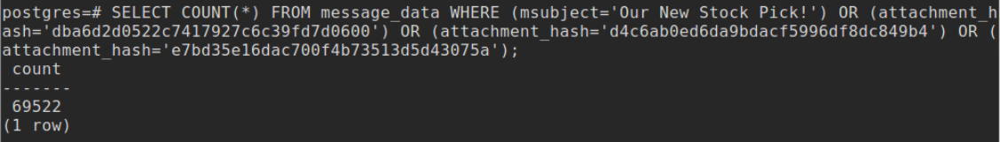
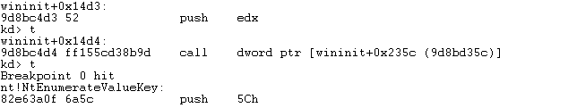

Final
HackTheBox is an online penetration testing platform that allows users to practice hacking in an ethical way. They provide various different types of challenges, including web, crypto, and forensics; however, the first step to signing up is to hack the authentication page for an invite code.
The Invite:
I began by inspecting the web page using Chrome DevTools. After searching around for a few minutes, I noticed a javascript source called “inviteapi.min.js”. This seemed to fit the theme of what I was trying to accomplish, getting an invite code, so I dug in and found a function called “makeInviteCode” inside the javascript.

I called this function in the console and received a successful response. In the response data there was a gibberish string, and luckily there was also a field that said the encryption type, ROT13.
I used Cryptii’s ROT13 decoder (https://cryptii.com/pipes/rot13-decoder) on the string which gave the output “In order to generate the invite code, make a POST request to /api/invite/generate.”
Using Postman, I hit this endpoint with a POST request and received a response with an encrypted code.
Based off of the code’s appearance, I made a guess and tried decoding it with a base64 decoder (https://www.base64decode.org/). The result was a string that looked much like a generated id, so I figured this was the final code.
I entered it into the invite code field and...
Woohoo! I got in and created my account.
Challenge Lernaean (Web, 20 points):
The first challenge I chose to do was a web challenge called Lernaean. After going to the provided host for this challenge, I arrived at the following screen:
The page is an admin login page with a simple one-input form for a password. The site exclaimes “Please do not try to guess my password!”, which is quite obviously the biggest hint on what to do next, guess some passwords! The first thing I did was try the password “password”, but unfortunately that did not work-- always worth a shot. On my Kali Linux VM, I decided to use the tool Hydra, a password-cracker that can target web endpoints. On the Kali machines there are also password pools to use, and I chose to use the “rockyou” password pool. First, however, I had to figure out the format of the post request being sent. Using the tool Burp and after setting up my browser to use a local proxy, I was able to intercept the network requests and view them.
The post request format was simple, just giving a password string. I ran Hydra with the command “hydra -l ‘’ -P /usr/share/wordlsits/rockyou.txt.gz 159.65.208.41 -s 38441 http-post-form ‘/:password=^PASS^:F=Invalid Password!’. This command sends post requests to the provided endpoint, injecting each password in the pool into the request and using the provided response failure text to validate success. I got the network address for the site using a DNS lookup site on the domain. After running for a minute, Hydra gave an output for a successful password “leonardo”.
My excitement was soon halted, as after entering the password, I landed on a page only providing the text “Oops! Too slow!”
I found out that this was another sneaky hint, as after digging through the network history on Burp, I found the original post request that was made to login and its response. This response has the flag in a header tag, but also has javascript to immediately change the window location to the “too slow” page.
I turned in the flag, and success! First challenge completed.
Challenge Sick Teacher (Crypto, 20 points):
For the next challenge, I chose one from the crypto category called Sick Teacher. This challenge had me download a text document with ciphered text.

The first thing I did was google for a deciphering tool on the web, and I ended up picking one called quipquip (https://quipqiup.com/). I entered the ciphered text and it began to solve the puzzle. The app also shows the history of each iteration of solving the cipher, so you get to watch it’s progress. The end result was the following text.
It was missing certain, more difficult letters such as X and W. Another important letter that was missing was G, and after doing my own analysis by looking at unfinished words such as “?LOBE” and “FOR?ET” which, in context, were easy to notice were “GLOBE” and “FORGET”, I was able to ensure that the second to last word “FLA?” was “FLAG”, meaning that “LOREMIPSUMDOLORSITAMET” was the flag. Luckily, that word was completely solved for by quipquip.
Challenge Widescreen (Stego, 20 points):
The first Stego challenge that I chose to do was Widescreen. I downloaded and opened the png image and, to my surprise, the flag was in plain sight. I thought for sure it was a trick or possibly a joke, but the flag submission was correct. After doing some research on the challenge to make sure this was all there was to it, I saw that other people were unable to see the flag at first and had to change the contrast or gamma to see the text. It turns out that the monitor I was using had the right coloring to be able to see the text immediately; however, on my laptop I couldn’t see it at all. To be legitimate, I still did complete the challenge by altering the image gamma.
Challenge Unified (Stego, 20 points):
Because the first Stego challenge I did turned out to be easier for me than the author intended, I chose to do another, the Unified challenge. This challenge had me download a text file that stated itself as a utf-8 message.
The first thing I did was convert the different languages to English; however, they all translated to the same text as the english sentence. After that, I had a strong feeling that the answer lie in the encoded characters. I remembered seeing a “Decoder” feature in the BurpSuit web analysis tool, and being that the file was a utf-8 message, the preferred encoding for email and web pages, I attempted to decode the message there.
The flag text was somewhat broken up by filler characters, but it was still there and noticeable. The Decoder tool in BurpSuite lets you choose to decode or encode with different types such as base64, hex, octal, and binary, but the quick solution that I used was the “Smart decode” button, which recognizes the encoding for you.
Week 9 & 10
The content of these weeks were presented by Fernando Ruiz and cover the topic of mobile security. The malware analysis focuses on the Android platform specifically.
Over the past 40 years, phones have come from being extremely analog to now being digital and data-connected. The has changed the landscape for mobile security immensely. In 2009, the Android operating system hit the market, and since it and iOS have become the two largest platforms. With the launch of Android, many players were pushed out of the market such as Symbian (Nokia) and Blackberry. The Android OS runs on the Linux kernel and uses Java as it’s programming language. It’s app file format is an “.apk” file. iOS runs on XNU (Mac OS X) and uses Objective-C as it’s programming language, an extension of the C language. It’s app file format is an “.ipa” file.
One of the main components of an Android application is the presence of a Android Manifest file. This file is an xml file that declares important information about the application. One of the things the manifest defines is what permissions the application needs. This could be permissions such as sending sms messages, tracking location, or installing packages. In terms of malware, these permissions are very important as they give the attacker the access that they want to perform whatever malicious intent that they have. The manifest file also declares the app’s components such as the activities (runnable screens) and services.
Several new tools were introduced to us this week. These tools include:
- VirusTotal, an online malware analyzer providing information for android applications such as required permissions and certificates
- APKTool, a tool for decoding resource files into Smali code and letting you view Manifest files
- Dex2Jar, a tool to convert Smali code into Java
- JD-GUI, a tool that let’s us open and read .jar files as Java
One of the labs this week involved doing static analysis of two android malware samples: FakePlayer and TapSnake. The first thing we did with these samples was review their reports in VirusTotal. For FakePlayer, the main risks that were highlighted by the service were the ability to send sms messages and perform payment. Some more red flags were that the apk was created with the application in debug mode and the application only contained one activity (suspicious for a movie player application). TapSnake included suspicious permissions such as accessing location, automatic start on boot, and full internet access. This application also only had one activity, and the certificate contained no information that gave signs of legitimacy.
The next step was to decode the Android Manifest file from the encoded/compressed state of these samples using the tool apktools. This allowed us to read the file and validate that the information we receive from VirusTotal was correct in terms of the activities and permissions. We were also able to go through the main file and the resource files. To get the source files converted from Smali to Java (for readability), we used a tool called dex2jar. Then we were able to use the tool JD-GUI to look at the code. In the case of FakePlayer, the HelloWorld.class file attempts to send three text messages with code “798657” to premium rate numbers “3354” and “3354”.
After conducting the static analysis, we moved on to a dynamic analysis of the malware. We did this by running an application called “WalkTxt.apk” using a program called Eclipse and an Android Emulator. On the emulator, we first created a fake local contact that contains the emulator number in the devices contacts in order to give the malware bait. Next, after running the malicious application, the application delivers an alert message “Application Not Licensed. We really hope you learned something from this. Check your phone bill;) Oh and don’t forget to buy the App from the Market.” We also see a text message come on the emulator with the message: “Hey, just downloaded App off the Internet, Walk and Text for Android. I’m stupid and cheap, it costed only 1 buck. Don’t steal like I did!”
Week 8
This week’s content was presented by Eric Peterson with Intel Security/McAfee Labs. The focus was messaging security and email spam filtering.
The main topic covered was email Phishing. An email Phishing attack involves a malicious source attempting to resemble the email of a legitimate source in order to gather information from you interacting with it. Often these emails present information that intends to invoke an emotional response in the target so that they are distracted, curious, or worried enough to follow along with the attack before noticing that the source is not legitimate.
Like all social engineering attacks, the last wall of defense is the user. Because of this, Eric brought up the importance of education on email Phishing and walked us through a McAfee email Phishing quiz in order to demonstrate that it is often hard to tell the difference between something that is legitimate or not. What we learned is that links and anything asking for personal information is often a red flag. An interesting fact that was pointed out was that a HR departments were actually the most likely to fall for a Phishing attack, and they are also the ones with all of the employee’s information.
A new tool introduced this week was Regex Coach. Eric demonstrated the use of this tool in-class and how it can be used to help in the creation of a regex statement. The tool lets you provide a target string and as you type into the regex field the program will dynamically highlight and show your progress with matching it. This content gave us an introduction to how spam identification and filtering can work by using regex.
The lab this week involved identifying spam data in a postgres database using SQL queries. After opening up the postgres instance, the first thing I did was look at how many of the items were actually marked as spam with the following query to get my target. Of the 100,000 rows, 85,000 were spam.
After copying the data to csv file or examination, the first condition I added to the query was where the msubject field was equal to “Our New Stock Pick!”. This subject was very common amongst the spam messages and captured 61,862 spam messages.
The next field that I looked at was the attachment hash. Some of the hashes amongst the spam emails very common, and adding these to the query condition increased the captured spam messages count to 69,522 spam messages.

Finally, to practice some of the regex techniques we learned, I added the condition of the url starting with the string “cid:ii”, which was found on a majority of the spam message but not the legitimate ones. This brought the captured count to 69,573 of the total 85,000 spam messages, but on its own could capture 62,591.
Week 7
This weeks content was presented by Cedric Cochin and focused on web security and how attacks can be carried out through the internet and web browsers.
Since the beginning of the web, technologies that we use and the way we use them has evolved over the years. This has caused attacks to evolve as well as they adapt to the changes in web browsers and plugs, and through the changes, 95% of malware is still delivered via the web. The most common injection points for these attacks are browser extensions and script engines. At a certain point, once there were many browsers that users were using, attackers decided to focus a lot of their attention on browser plugins such as Adobe Flash, Java, and Quicktime because they are browser independent, giving the attacker a larger audience to attack.
The first type of attacks mentioned by Cedric was user attacks. This type of attack involves social engineering which is the psychological manipulation of people in order to get a desired action or result from them to gain information. An attack that classifies under this is Phishing. Phishing involves an attacker creating a fake version of another very popular site, such as Facebook or a banking app, that resembles the original site so much that users assume they are at the right location and enter in their credentials. These credentials are instead then sent to the attacker rather than authenticating them. Another attack of this type is Malvertising. In this attack the attacker injects advertisements with a malicious payload into legitimate advertising networks, so they can appear even on trusted web sites. This can deceive users into thinking that the add is trustworthy, but when they click on it, the advertisement delivers a malicious payload. User attacks are really effective because users are the weakest link in the system. Software can be optimized for guarding against malware, especially if the developers are adamant about making their system well defended; however, users typically are not as informed on the signs and dangers of malware, or may just not be paying attention in the moment.
The second type of attack covered in class were browser-level attacks, which involve the attack exploiting some uncovered vulnerability of a certain browser. One type of browser-level attack is content/script obfuscation. This technique makes it so that a browser can’t recognize malicious-looking page content, and therefore goes undetected. The attacker does this by encrypting the text, making the text difficult to read, or having the script be self generating. Another form of browser-level attack is SQL injection. Because most sites are database-driven, accept user data, and often are created by web developers who are web security experts. This allows attackers to use the input to directly call SQL commands on the database and manipulate the data in malicious way. Because browsers are able to put security measures in place, browser-level attacks are somewhat mitigated unlike user-level attacks, but they are still very common as the attackers evolve as well.
In the second lecture of the week, Cedric mentions some web malware research tools for fighting back against attackers. These tools include PhantomJS, a browser that allows full interaction with a page’s javascript; Firebug, a browser debugger allowing inspection and breakpoints; and Jsunpack, a command-line utility for detecting exploits in browsers and browser plug-ins.
Week 6
This week’s content was presented by Ram Venugopalan and Geoffrey Cooper and focused on network security.
The first topic covered regarded the different defense strategies and technologies used to prevent attacks over a network. One widely practiced strategy is to accept the fact that your defenses can be broken through, and instead of banking on the idea that no one will enter, rather create multiple lines of defenses that an attacker needs to go through to get to the most sensitive information. The analogy for this is a castle, with different types of defenses all circling around the center keep.
Some of the technologies used to prevent these attacks include: positive policies, intrusion detection systems, and firewalls. Positive policies are essentially “whitelisting” and follow the premise that since there is an infinite amount of threat variants and a finite amount of traffic that your network needs to interact with, it is better to be explicit about what you let through rather than what you don’t let through. On the other side of this is intrusion detection systems, which have the purpose of identifying and protection against potentially malicious traffic in a network. Firewalls are devices that checks traffic before it reaches you in order to conduct filtering of anything suspicious.
Two forms of attacks were highlighted in this week’s content: DDoS and Man in the Middle attacks. DDoS attacks, or Distributed Denial of Service attacks, involve multiple sources sending high amounts of traffic to one endpoint in order to overwhelm it. This causes a “traffic jam” and doesn’t allow normal users to get attention because the servers are so overwhelmed. DDoS attacks are hard to defend against because it is difficult to determine which traffic is normal and which is an attacker. Man in the Middle attacks are another type of attack that is hard to defend against because it is a strategy that can be used for good as well. It involves someone putting themselves between two endpoints to do something with the packet traffic, and the two endpoints cannot tell it is happening because the “man in the middle” is still allowing the traffic through. However, they are able to alter the packets’ content on its way, potentially causing harm. For good, the Man in the Middle strategy can be used to detect malicious traffic, like a Firewall, or potentially identify someone in danger.
Some tools that were mentioned this week were Nmap and WireShark. Nmap is a tool that allows you to do different types analysis on a network. For example, it allows you to create a map of all the different ports on a network and provide information on each of them, all while having a low risk of alarming the target. WireShark is a tool that was focused heavily in the second part of the week and is a tool that lets you observe all of the network traffic in the form of packets on your current network. This can be used maliciously in order to spy and observe on the content going across a network, but it can also be used for good for the same reason.
Week 5
This week’s content was presented by Aditya Kapoor with Intel Security and focused on windows memory manipulation and rootkits.
Rootkits are a type of malware that attempt to enter kernel mode (.sys) files in order to obfuscate themselves. When they are at this level, they have unrestricted access to any part of memory, and because of the nature of windows operating system hiding system/kernel files, anything created can generally go under the radar to any antivirus running in user mode or to the user themself. In kernel mode, the malware will have even power with antivirus that is also in kernel mode, creating somewhat of a battle; however, many antivirus systems do not run in kernel mode and therefore will have less power than the malware.
The lab of focus this week, Agony, involved observing a rootkit and it’s behavior with some tools that we are already familiar with and also some new ones such as Tuluka, a tool that raises anything fishy with things such as running processes, drivers, or kernel function pointers.
First I extracted and ran the malware using the cuckoo analyzer, and the log showed a few files being created. Two of these files are tzres.dll and sortdefault.nls.
The more interesting result of running this malware, however, was the hidden file created by the malware called wininit.sys. Instructor Kapoor demonstrated to us that doing a regular directory read will not display the file, and to actually have it be read, you need to specify files with a .sys extension.
This is one of the behaviors of rootkits, as they are able to take control of kernel api functions to hide their tracks from antivirus and users. In our newly introduced tool Tuluka, I found three suspicious api endpoint addresses after running the malware, which explains why we were unable to see the created file, wininit.sys, earlier. Specifically, this file hidding is happening at kernel function NtQueryDirectoryFile, and wrapping this api the malware is able to hide the file. The malware does this by changing the address location of these functions to run their own, but they still call the original kernel function eventually to preserve functionality. Wrapping NtEnumerateValueKey allows the malware to hide registry values, and NtQuerySystemInformation let’s it hide running processes.
Using another new tool, LiveKD, a live debugger for reading Windows kernel memory, I was able to list the memory at the original and new addresses for these kernel functions. For NtEnumerateValueKey, I was able to see that the original address pointed to the correct function, however, the new one pointed to wininit.
The next task was to remotely debug using a separate VM and WinDbg to find the exact byte offsets of when the overwritten kernel api’s call the original functions based on their start. After hooking up our debugee machine from the debugger and setting a breakpoint on the new suspicious address for NtEnumerateValueKey that was set by the malware, I stepped through the steps until the original functions was called and took the difference between the calling address and the beginning. The start was at 9d8bc480, and the original function got called at 9d8bc4d4, which is an offset of 84 bytes.

For the overwritten NtQueryDirectoryFile function, the beginning was at 9d8bc050 and the original kernel function got called at 9d8bc086, which is an offset of 54 bytes.
For NtQuerySystemInformation, the beginning was at 9d8bbf00, and the original function got called at 9d8bbf1a, which is an offset of 26 bytes.

Week 4
This week’s content is presented by Brad Antoniewicz who works for Intel Security carrying out attacks to provide organizations with vulnerability knowledge on their own system.
Attacks are carried out through finding vulnerabilities in a system and exploiting them in a way that accomplishing whatever goal the attacker has. This can be by either taking advantage of bugs in a system or by taking advantage of poor programming or configuration. Over the past couple of decades, as the internet has become more integrated into our daily lives and more sensitive information is stored, hacking has gone from something fun and playful to something very dangerous. The good hackers, like Brad, hack ethically, and their goal is to help organizations keep their systems secure by pointing out vulnerabilities that they have found. Some companies, such as Samsung, have “bug bounty” programs that payout individuals who find these vulnerabilities and report them without doing anything harmful.
Some examples of potential vulnerabilities include weak passwords, authorization issues, and inadequate encryption, but this class focused on a form of input validation vulnerability called memory corruption. This means to access memory in an invalid way to get undefined behavior and exploit that behavior into getting some sort of payload or action to be performed. The tool that is demonstrated for aiding in this exploit for Windows machines is WinDbg which allows you to set breakpoints and stop execution of a program in order to explore the memory content and see what is being stored in registers at that point in time. This gives a hacker insight into what, when, and where something needs to be altered in order to have their payload executed.
The lab this week was somewhat of a guided hack to launch the system calculator through a browser exploitation, and WinDbg was a very important tool in doing this. We first began by playing around with different commands in WinDbg to get our fingers comfortable, and after setting a breakpoint and stepping through some commands we were able to find little easter eggs like the string “FluffyBunniesDon’tFlapOrQuack” at the address where esp is pointing and the decimal “31337” being in the eax register using “du poi(esp)” and “.formats eax” commands.
After getting warmed up, we began the hack by opening up the javascript and changing one of the function variables to “msfPatternString”, which is a non-repeating string used for exploitation that lets us see where we are at in memory when the program crashes. The exploit was already setup for us by having eip on the stack overwritten with filler bytes “414141”. We can then use a tool called byakugan that, when we give it an offset, tells us which registers we have control of and at what offset.
We use this offset in the javascript function to make the s variable is the correct size to go right before eip, so that anything we add after will then be guaranteed to overwrite eip. We use 1028 / 2 because MakeString() actually returns two bytes for every on requested. We then concatenate the d-word “\u4242\u4242” to validate that we have done everything correctly with WinDbg.
According to instructor Antoniewicz, we’re now hacking! Next is to change the value we put at esp to the jpm command rather than the filler so that we can have the program run our shellcode without knowing exactly where it is in memory (trampoline method). We cheat a little bit to find the jmp command location as we know where to look already, so we search between address locations for the byte values using “s 54430000 5442b0000 ff e4”.
After adding the location of the jmp command (and learning that we have to swap the byte couples), we learn another “gotcha” in that we must also add an additional four filler bytes for the cleaning of the function arguments off the stack. Now we can concatenate the location of our shellcode and…
Yippee! We trigger the vulnerability, our shellcode gets run, and the calculator gets launched!
The second class focused on lots of movie references, and also program heaps and more windows debugging. After calling new() to create an object, space on the heap gets allocated using the malloc() system call, but there are other APIs that can get called as well, building upon each other depending on the space needed. In cases of very small allocations (<16KB), a front-end allocator will get called which creates a low fragmentation heap. If more space is needed, a back end allocator will be invoked (16KB - 512KB), and if even more space is needed VirtualAlloc() will be called (>512KB). Internet Explorer uses VirtualAlloc(), which gives us information on how to do heap exploitations through browser applications.
The particular vulnerability that this class focuses on is called a “use-after-free”, which has been a more common and successful attack recently than attacks using the stack. The basics of exploiting this vulnerability involves four steps. First, we free an object on the heap, and then we replace it with something that we control. After we then trigger the use of that object again, it uses whatever shellcode we’ve placed in the correct location.
To execute on this, we use a command to enable the page heap on the virtual machine and user mode stack tracing, which gives us more detail in the crash report from Internet Explorer in WinDbg and let’s us see details about the current allocation status, size, and the history of heap allocation calls. This lets us know exactly where space on the heap is getting freed from a delete call. At this point we can then use javascript to write attacker control data to the same location and the same size as the space that was being freed where we were able to crash the browser application. To get our shellcode to run, we take advantage of how the heap allocator/VirtualAlloc() works and make make an allocation for a large amount of data which creates a predictable pattern with the different portions of the heap, letting us know where the heap portions are starting and ending. This ultimately lets us know where to position our shellcode in order to have it ran when the object that we placed in the free space gets used again.
Week 3
Defense Against the Dark Arts featured speaker Craig Schmugar this week, who covered malware defense and some of the basics for how people/software identify malware.
This week’s content began by discussing the attack flow of malware operations, and when the opportunities for defense are. The first step in malware’s attack is called “First Contact”, which can be through avenues such as email, malvertising, or a watering hole (a frequently visited location by a target). Once the malware is in, it can begin local execution, but needs to go undiscovered to be ultimately successful. The amount of malware that is signed binary is increasing exponentially with 16 million malicious signed binaries in 2014, so this has become one popular way that malware has been able to hide themselves as legitimate. They can also change the time stamps of the files they create or modify, and they can use filenames that look very similar to OS filenames. Once a malware is on its target and running, it then harvests the information it is looking for such as emails, browser data, screen scrapes, and passwords and sends this data back through web or email.
The first tool we looked at this week was Yara. Yara is a tool that matches signatures within file binaries to identify them malicious. This is part of what AV providers use to identify malicious content on their users’ machines. The skill in writing these yara rules is making them as concise as possible in order to keep download/update sizes small for users while also providing enough information to not provide any false positives. The key is balance, and the best rules will be short and never incorrectly identify because they match for patterns that are completely unique to the specific malware or type of malware.
In class we used Yara and were prompted to find signatures that correctly matched two pieces of malware that we were provided. For the first one, I was able to find the string “Jenna Jam” on my own that identified the malware, and we were then given the complete answer which also included the string “AikaQ”.

One the second one, again I was able to identify the first string match of “DownloaderActiveX”; however, there was also another one which was a CLSID “c1b7e532-3ecb-4e9e-bb3a-2951ffe71c61”, but the complete answer did this with a binary pattern and jumps (the bracket notation).
The second lab we did this week was on day two and covered a tool called “Cuckoo”. Cuckoo analyzes the running of a process, and can behavior such as api calls by spawned processes; files being created, downloaded, or deleted; memory dumps; and network traffic. Cuckoo claims to be able to provide analysis on any type of file. In the lab we ran Cuckoo on the malware that we originally analyzed in week one. In conjunction with FakeNet, Cuckoo showed us the malware trying to download files such as “tongji2.exe” and creating a file called “svchest.exe” (rather than “svchost.exe”).
The wrap-up for this week included a discussion around the role of automation within identifying malware. Around 99% of signature creation is automated now; however, Craig Schmugar emphasized that the remaining 1% must still be done by hand because the work by a human is still far superior. While the work in signature recognition has largely been covered by automation, there is still human work to be done and new progress to be made such as in the field of AI with malware detection.
Blog Post:
NEWLY FOUND KEYLOGGER MALWARE AND HOW TO IDENTIFY ITPosted by: Ryder McDowell
A new piece of malware has been identified at McDowell Anti-Malware Labs that could potentially breach the security of your passwords or other sensitive information.
After file examination, we have identified Yara signatures that uniquely identify this malware and help diagnose whether you have been infected. The signatures to match for are “GetTuPian.asp”, “tsapcmp”, and “Keyboard”, and the full Yara rule can be seen in the following figure (A).
(A)
After analyzing the behavior of this piece of malware with the tool Cuckoo, we are fairly certain that the malware is some sort of a keylogger because of the frequent references that are seen in the malware activity to files that relate to the keyboard and its drivers. Some of these targeted files include “wm.ime” (windows input method editor), system keyboard layouts, input hotkeys, and "kbdus.dll" (US keyboard functions). Some of this activity can be seen in the following figures (B, C) of logs from Cuckoo.
(B)

(C)
If you have recognized any of this behavior on your computer, you have most likely been infected by this malware and should immediately stop any actions that involve sensitive information until the malware removed.
Week 2
This week’s content in Defense Against the Dark Arts covered malware forensics and the methods and tools involved with it. Two in-class labs were focused on this week as well that aimed to provide experience with the forensic tools FTK Imager and Volatility.
The basis of malware forensics is to identify, preserve, and analyze evidence, and then present the results and findings to a law official for further judgment. An important aspect of being involved in malware forensics is to stay professional, unbiased, and respect your role as just a reporter of evidence, leaving the interpretation and ultimate decision on how to move forward to the court of law. Some of the important evidence acquisitions are memory, drive or long-term storage, and any network traffic.
Because evidence is everything in forensics, there are specific precautions and procedures to follow when executing an investigation, many of which have already been predefined. One of these procedures revolves around the order of volatility within a computer system, and describes the order in which evidence should be collected from a system in order to ensure the most results. The order begins with system memory and temporary file systems such as as the swap file or paging file, and ends with any physical configurations or backups. It is also extremely important to reduce any contamination of potential evidence in the process gathering it.
The first in-class lab of focus this week was a lab on the FTK Imager tool. This tool allows you to create forensic images of a drive or other source of storage, and export them to any destination, such as an external drive plugged into the target. This tool allows you to copy data off of the storage such as the master file table, page table file, hibernation file, and any other content on the drive. It can also export the data to different formats, included just raw. In the lab, we tested the tool by just creating an image of our virtual machine in order to play around with the different features and capabilities.
The second lab we did in-class demonstrated the Volatility tool. This is a command line tool that is used to perform analysis on memory dumps and can provide a lot of information on what was stored in memory, such as information on the operating system, networking artifacts, process permissions, and what processes currently loaded in memory. A command that was covered in class was “dlllist”, which lists all of the currently loaded processes and their id’s, but also the processes’ loaded dll’s to see which are related.
Week 1
To begin defending against dark arts, we must first be able to identify them. This week’s content of CS 373 included some of the basics of malware, such as being able to identify different types of malware, analyzing their behavior in order to prevent future attacks, and who these attackers even are.
In the world of malware and malware defense, there are many descriptive terms that are used in order to communicate with each other professionally. Two very commonly used terms are white and black, which are used to describe if a piece of software is clean or dirty, respectively. This allows communities involved to be aware if certain software can be trusted. When the integrity of a sample is unknown, it is referred to as grey. Another basic for malware is the naming convention. The convention is as follows: type(:), platform(/), family, (.)variant, and (!)information. An example of this looks like: “Trojan:Win32/Reveton.N”.
A term that was new to me that ended up receiving some discussion in the lecture was a “polymorphic” piece of malware. This is a type of malware that will constantly change key elements of itself to avoid detection and make stopping it much harder. What was most interesting about polymorphic malware though, was its rarity. The lecturer, Christiaan Beek with Intel Security/McAfee Labs, stated that these pieces of malware were extremely hard to detect and diagnose, yet they were not extremely difficult to create. I believe that the reasoning for this was that they are not worth the extra effort/skill for a hacker to create when there are much simpler alternatives that can be just as successful. What’s particularly unsettling about this is that these threats are still not having to use the most powerful tricks, and can still be a massive problem.
Just like attackers have tools for creating malware, we also have tools for analyzing them. Each tool has a purpose, and they can do things such as monitor process events and network activity, close off connections, or even create fake connections in order to capture any outgoing requests. Some names of tools for analyzing malware include: Process Monitor, FakeNet, FileInsight, and Wireshark. The malware needs to be running in order to be able to analyze it though, so it is important to create simulated environments to run the malware in order to keep it contained and analyze safely. These are sometimes called “goats”, a sacrificial environment to let the malware do what it does.
So who really are these attackers? And what do they want? We classify malware attackers as APTs, or Advanced Persistent Threats, and they mostly consist of governments, organized crime groups, and competitors within a marketplace. One of their biggest motivators, unsurprisingly, is often money, but it can also be for ideology, revenge, or just for the fun. A typical pattern is also followed by these attackers. This pattern includes reconnaissance, weaponization, delivery, exploitation, installation, command and control, and finally, action.
What really drove home for me why malware defense and forensics and be so exciting, is the concept of baiting. Just like fishing, the excitement comes from knowing the targets and strategically setting up environments to get the best of them. Two forms of baiting were mentioned: honeypot baiting and baiting for malware replication. Honeypots are machines that are placed around the world waiting to receive a malware attack in order for it to be analyzed, and baiting for malware replication involves intentionally staging an environment that a piece of malware is being tested in to force certain behaviors (if those behaviors exist).